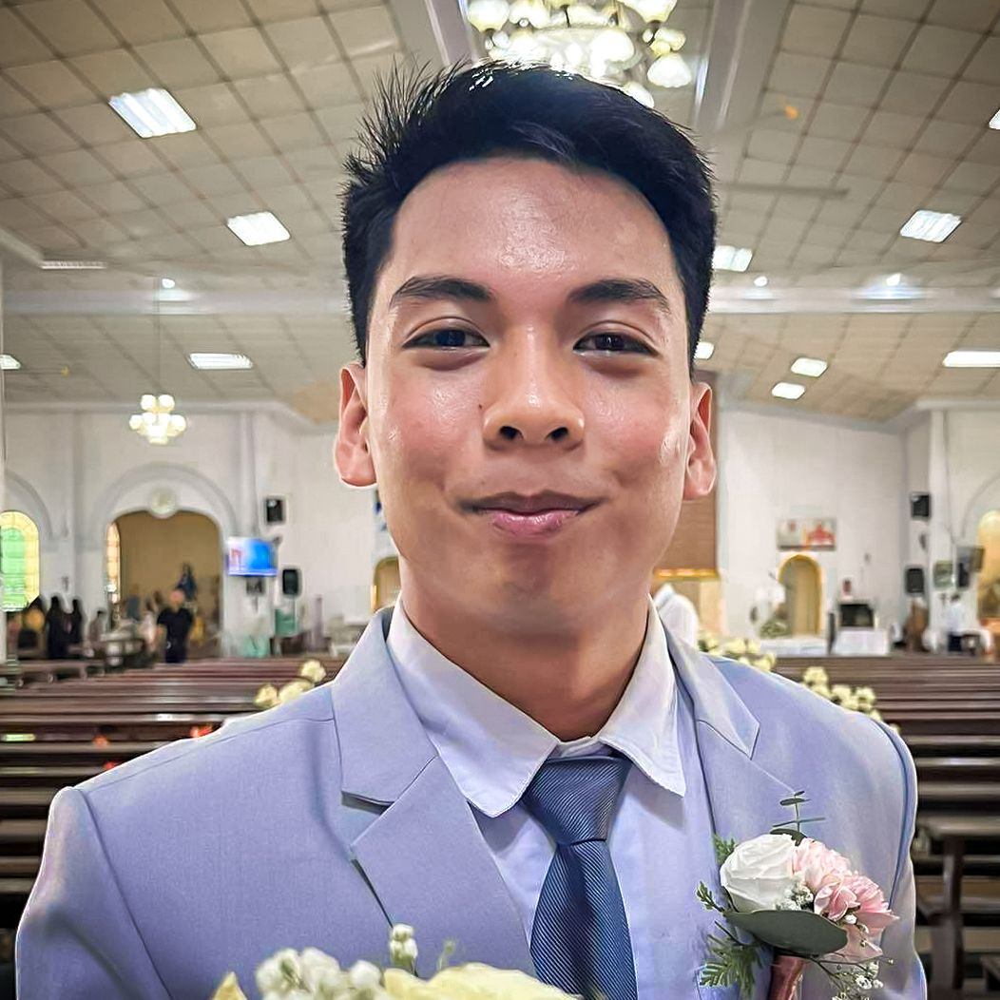
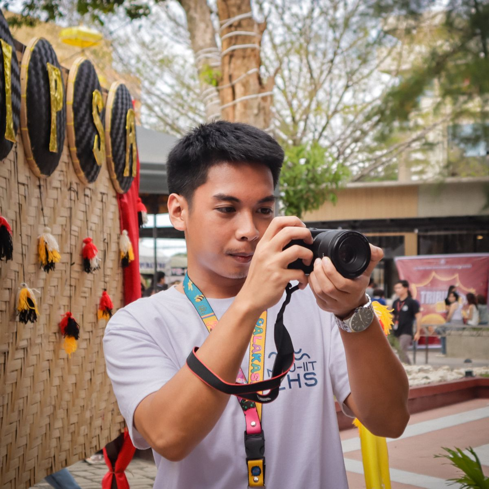

About me
Nursing student, youth leader, and founder.

My story
Originally from Aurora, Zamboanga del Sur, I am a 3rd-year Nursing student at MSU-IIT and an essentialist student leader. My journey spans from launching my first micro-startup at age 17 to becoming a DOST-SEI Qualifier, consistent Chancellor's Lister, and Top 20 MSU-SASE topnotcher. Combining the active listening of healthcare training with a passion for social innovation, I strive to turn complex challenges into clear, actionable solutions.
Currently, I serve as the Chairperson of CYA-Iligan and the Founder of the LAMP Online Review Program, a youth-led initiative focused on strengthening STEM competencies and widening college access for Senior High School students. My primary goal is to bridge educational and career development gaps for provincial youth, starting with deploying a localized KadaHub in Zamboanga del Sur.
Hobbies and fun facts
- Productivity podcasts: leadership and strategy episodes while doing laundry or running.
- Fuel of choice: Kopiko 3-in-1 Dark coffee, almost entirely.
- Nightly habit: daily essentialism, balanced with late-night productivity doom scrolling.
- Philosophy: essentialism means focusing only on what adds real value and removing the noise.
Achievements and organizations
- Chairperson, CYA-Iligan (youth community leadership)
- Founder and Lead Coordinator, LAMP Online Review Program
- Alumnus and Pitcher, MSU-IIT MYISAP Apprenticeship (pitched to DOST and DICT panels)
- Founder, Homey Adorrabits (micro-startup launched at age 17)
- Honors: Top 20 MSU-SASE Topnotcher, DOST-SEI Qualifier, Chancellor's and Dean's Lister
More moments
